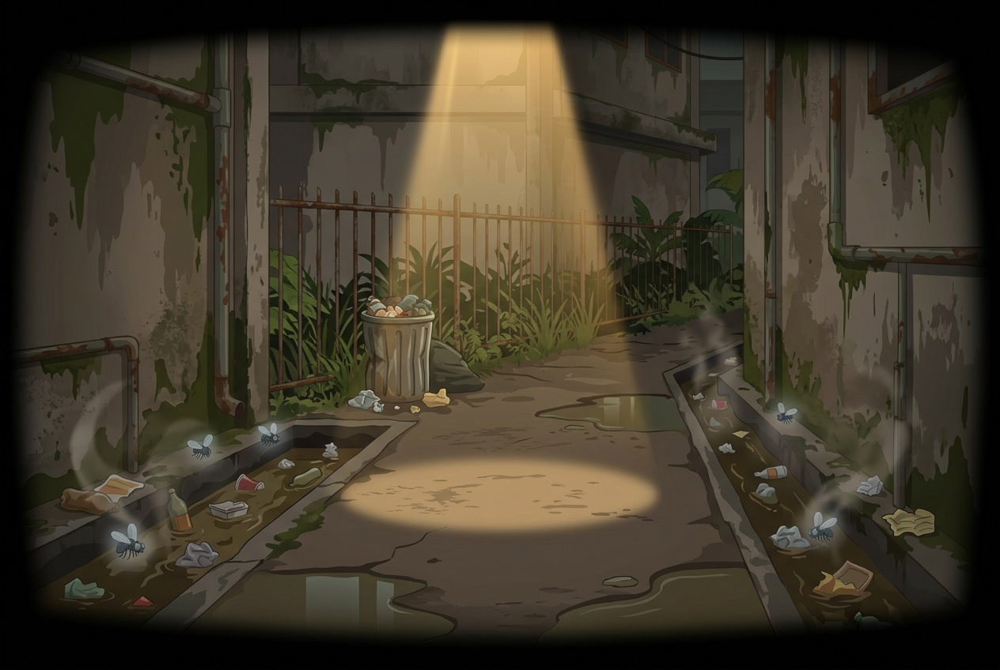
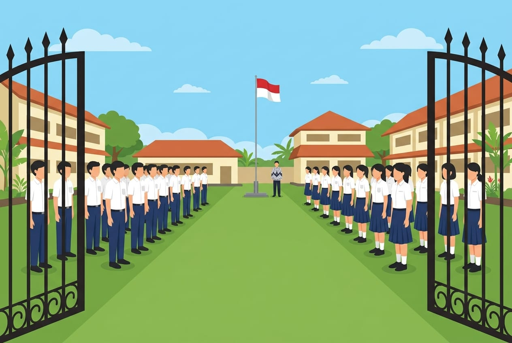
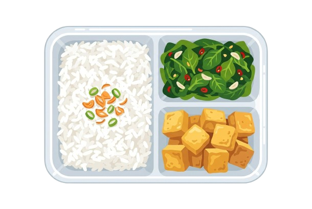
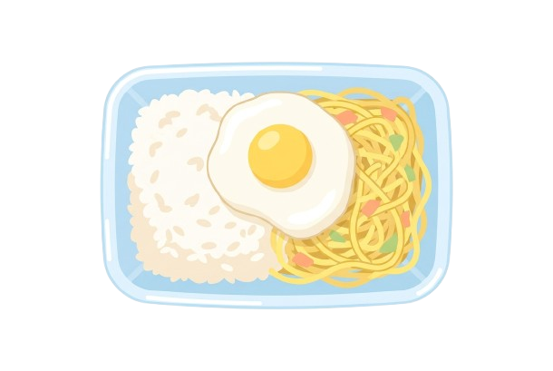
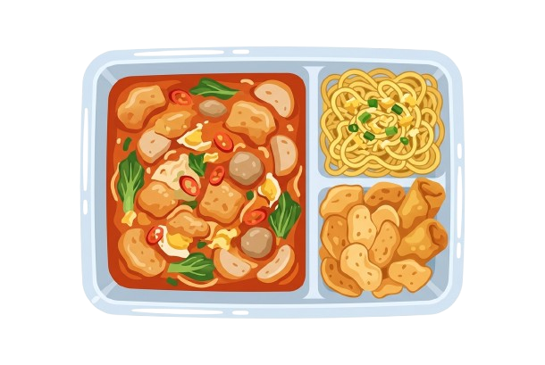

Nenek Moyang Lagi Natah...
Jangan kemana-mana, bentar lagi wayangnya main!


🧩 CARA MAIN
- 1. Selesaikan 12 Tantangan Kesehatan.
- 2. Gunakan logika medis memilih obat.
- 3. Dapatkan bintang di setiap misi!
Baca panduan ini agar misimu lancar, Detektif!

⚖️ RULES
- 1. Benar = +1 Bintang Sehat.
- 2. Salah = 0 (Tanpa pengurangan poin).
- 3. Selalu baca fakta medis di akhir!
Detektif, pahami aturan mainnya agar tak tersesat!


Siang itu di kelas, Rina tiba-tiba merasa pusing hebat! Kita harus bantu dia memilih obat yang benar, Detektif!


Pilih satu obat di meja lab, lalu klik Gelas Air untuk memberikannya kepada Rina. Jangan sampai salah!

HASIL


Andi, seorang siswa OSIS, merasa resah karena sudah seminggu banyak temannya sakit perut. Setelah ia periksa, ternyata warga masih suka buang air besar di selokan belakang kantin. Masalah ini serius karena penyakit bisa menyebar dari sini. Apa yang harus kita lakukan untuk membantu Andi?
Andi menunggu saran terbaikmu, Detektif!
HASIL


Siti sering pingsan saat mengikuti upacara. Makan siangnya hanya terdiri dari nasi dan mie instan. Siti membutuhkan gizi seimbang. Makanan apa yang kaya akan zat besi untuk membantunya?
Pilih kombinasi makanan yang paling bergizi untuk Siti!



HASIL

Fajar membaca pesan viral yang menyatakan bahwa vaksin DBD bisa menyebabkan kemandulan. Akibatnya, teman-temannya menjadi takut untuk divaksin. Namun, benarkah informasi itu? Ini masalah serius. Kita harus mencari tahu kebenarannya sekarang juga.
Fajar menunggu saran terbaikmu, Detektif!
HASIL

Dimas sering menyendiri dan nilainya turun drastis. Tidak ada yang bertanya tentang keadaannya. Dimas sedang tidak baik-baik saja. Apa yang harus kita lakukan untuk membantu?
Dimas menunggu saran terbaikmu, Detektif!
HASIL

Apa tindakan terbaik saat gempa? Pilihlah dengan bijak, Detektif!
HASIL

Raka sudah batuk selama tiga minggu. Setelah diperiksa, dokter mendiagnosis TBC dan memintanya untuk isolasi mandiri. TBC menular melalui udara. Apa yang harus Raka lakukan?
Sadewa menunggu keputusanmu, Detektif!
HASIL

Dinda bercita-cita menjadi dokter, tetapi nilainya biasa saja sehingga ia ragu.
Nakula: Setiap profesi kesehatan itu mulia. Apa tugas utama seorang dokter?
HASIL

Nenek Bayu sakit parah. Bayu bingung apakah harus langsung ke rumah sakit besar atau ke Rumah Sakit terlebih dahulu.
Sadewa: Sistem rujukan itu penting untuk menjaga biaya dan kualitas perawatan.
HASIL

Toni ingin memiliki tubuh yang bugar, tetapi ia malu karena sering diejek. Akhirnya, ia hanya diam di rumah bermain game.
Nakula: Olahraga sangat penting bagi kesehatan. Bagaimana cara memulai yang benar?
HASIL

Wabah campak menyerang asrama! Banyak penghuni yang belum mendapatkan vaksinasi.
Nakula: Vaksinasi bisa melindungi semua orang. Apa yang harus kita lakukan?
HASIL

UJIAN TERAKHIR
Ini adalah ujian terakhir. Bekal apa yang harus selalu kita miliki di rumah untuk menjaga kesehatan?
Sadewa: Kamu sudah belajar banyak sepanjang perjalanan ini. Buktikan bahwa kamu sudah siap!
HASIL